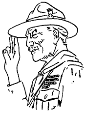
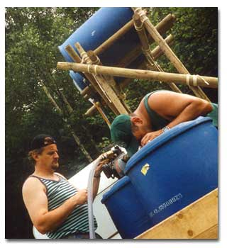

Tweede Klas Vereisten voor 200e De Vleermuis

Hieronder vind je de vereisten voor de Tweede Klas van De Vleermuis. Met dank aan De Tortels voor de informatie over de verschillende knooptechnieken. Bezoek zeker eens hun website voor meer technieken!Download deze pagina als een handig afdrukbaar Word-document.
1. Apebrug
Stel een apebrug op (onderkant én bovenkant) met zeemanstouw (geen klimtouw). Hier zie je summier de basishandelingen.
Technieken:
- paalsteek
- spanknoop (voermansteek)
- touw oprollen (klim- en zeemanstouw)
- musketon en kelf (oog)
Aandachtspunten:
- beginpaalsteek: met veiligheidssteek, hoog genoeg
- spanknoop: ver genoeg van boom, juist gelegd, met tak, met kelf of musketon, hard aangetrokken, eerst rond boom, dan drie windingen en drie halve steken
- bovenkant: hoog genoeg
- spanknoop: rekening houden met rek (spanknoop ver van boom), musketon is vitaal!, aantrekken is veel moeilijker hier (zeer hoog), op spanknoop van zeemanstouw gaan staan om klimtouw op te houden
- oprollen zeemanstouw (op de grond, rond voeten van twee personen, opletten voor knoop!) en oprollen klimtouw (lofty-style)
- eventueel: hoogteverschil aanpassen dmv cordelette (touwen dichter bij elkaar trekken)
2. Shelter
Bouw een shelter met twee pikkels, één kant van het zeil naar de grond, één kant omhoog als luifel met 2 soorten scheerlijnen en de verkortingsknoop.
Technieken:
- kruissjorring
- pikkel
- vervangingsscheerlijn (2 of 3 soorten)
- verkortingsknoop (trompetsteek)
- shelterzeil
- richting spankoorden
Aandachtspunten
- twee driepikkels: palen met dikke kant beneden, onderaan gelijk gelegd, pikkelsjorringen niet te strak; de driepikkels aan alle drie de zijden verstevigen met horizontale balken
- dwarsbalk: horizontaal, stevig
- zeil: aan één kant naar de grond: twee soorten vervangingsscheerlijnen, piketten op de juiste plaats (op één rij, op de hoeken evenwijdig met de zijden van het zeil), trompetsteek om de lijnen te verkorten; andere kant: luifel, op rechtopstaande balkjes (met nagel), plaats van piketten en lijnen opnieuw heel belangrijk!

3. OriënteerOriënteer je kaart en beschrijf nauwkeurig de weg van a naar b.
Technieken:
- kompas
- kaart algemeen
- hoogtelijnen
- kaartsymbolen
- metrische schaal
Aandachtspunten
- kaart met het noorden exact naar echte noorden adhv kompas (niet op gevoel)
- afstand kunnen geven van afgelegde weg: via vierkantennet (ruw geschat) en schaal (met touwtje)
- reliëf:stijgen, dalen, steil, zacht, … en: let op de schaal!
- omgeving schetsen
4. Coördinaten
Waar ligt a en geef de coördinaten van b.
Technieken:
- vierkantennet
- coördinaten
Aandachtspunten:
- coördinatensysteem feilloos toepassen
- juiste schrijfwijze!
bv.5530 8270 (uiteraard eerst x (aflezen bovenaan of onderaan), dan y (aflezen links of rechts))
5. Azimut
Bereken de azimut van a naar b en stippel een gegeven azimut vanuit a uit.
Technieken:
- kompas
- azimut
Aandachtspunten:
- punt a en b worden opgegeven (adhv coördinaten of omschrijving) en de azimut van a naar b wordt gevraagd
- tweede punt: waar kom je terecht als je vanuit punt a x aantal meter azimut y stapt
6. Bepaal je positie
Bepaal je positie aan de hand van twee merkpunten.
Technieken:
- kaart
- kompas
- azimut
Aandachtspunten:
- vraag: je bent ergens op deze weg en je ziet een kerkje op azimut x; bepaal je positie
- vraag: je bent ergens op deze kaart en je ziet een kerkje op azimut x en een toren op azimut y; bepaal je positie
7. Brandwonden
Hoe ga je om met brandwonden?
Technieken:
- drie soorten
- water
- flammazine
- 100
8. EHBO
Kleine EHBO: Hoe ga je om met schaafwonden en blaren? Leg een noodverband aan en sleep een bewusteloze weg.
Technieken:
- met das/handdoek
- rautekgreep
Aandachtspunten:
- blaren: verschil open en gesloten
9. Zwaar ongeval
Wat in geval van een zwaar ongeval?
Technieken:
- noodnummers
- noodprocedure
Aandachtspunten:
- in veiligheid brengen: eerst jezelf, dan omstaanders, dan slachtoffers
- situatie inschatten, dan hulpdiensten verwittigen en verslag uitbrengen
10. Wet en de belofte
Geef de wet en de belofte, exact en in juiste volgorde! Lees ze hier nog eens na.
11. Spoor
Leg een spoor van a naar b (krijt, natuur, visgraat).
Aandachtspunten:
- spoortekens
- natuursporen
- visgraatpatroon
12. Show met touw
Deze knopen moet je perfect kennen. Klik op de verschillende knopen voor meer informatie over hoe je ze moet leggen.
- achtknoop
- dubbele achtknoop
- gekregen achtknoop
- paalsteek
- paalsteek in de bocht
- platte knoop
- schootsteek
- dubbele zoeteliefjes
- prussikknoop
- mastworp
- verkortingsknoop (trompetsteek)
- timmermanssteek en muilslag
- ashley's stopper
Deze sjorringen moet je kunnen leggen :
Dit zijn nog enkele belangrijke technieken:
- touwbezetting
- broekje maken met cordelette/prusik
- hoe boots je een aap (ascenseur) na?
13. Vuur
Waar let je op bij het bouwen van een vuur (kookvuur en kampvuur)?
Technieken:
- plaats
- veiligheid
- opbouw
- brandbaarheid houtsoorten
- vuur aanmaken in natte omstandigheden
Aandachtspunten:
- plaats: niet onder bomen, let op beschutting, …
- veiligheid: emmer water en zand bij de hand, schopje
- opbouw: drie soorten brandstof (tondel, aanmaakmateriaal, hoofdbrandstof), bodem maken (!!!), nat hout droog maken (met mes om binnenkant te bereiken, de rest zo opstellen zodat het droogt), eerst wigwam bouwen, trapsgewijs opbouwen, houthakkersvuur, stervuur
- houtsoorten
14. Patrouille
Geef de meest gebruikte patrouille-signalen (Verzamelen, aandacht, …)
15. Natuur
- De natuur niet bevuilen of beschadigen.
- 5 planten en 8 boombladeren kunnen herkennen en er iets over vertellen.